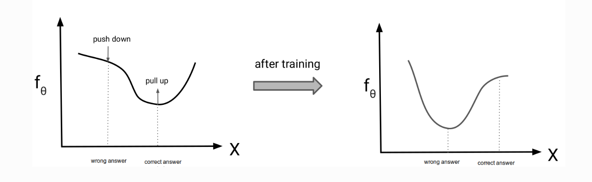

对比散度（CD）方法详解：从理论推导到直观理解¶
引言¶
在训练能量模型（如受限玻尔兹曼机，RBM）时，配分函数的计算一直是一个核心难题。传统的最大似然估计需要计算配分函数的梯度，但在高维空间中这一过程几乎不可行。 2002年，Geoffrey Hinton提出 对比散度（Contrastive Divergence, CD 方法，通过巧妙的近似策略，绕过了配分函数的显式计算，成为训练能量模型的里程碑式工作。 本文将深入解析CD的数学原理、直观解释及其实际应用。
1.问题背景：能量模型与配分函数¶
能量模型通过能量函数\(E_\theta(x)\)定义概率分布：
其中\(Z(\theta)\)是配分函数。训练目标是最大化数据的对数似然：
配分函数的梯度可通过对能量函数求导得到：
将对数似然的梯度分解为数据项和模型项：
其中：
- 第一项：数据分布的期望，直接计算训练样本的梯度。
- 第二项：模型分布的期望，传统方法需MCMC采样，CD通过短链采样近似。
梯度计算难题： 对数似然的梯度为：
其中第二项 \(\mathbb{E}_{p_\theta(x)}[\cdot]\) 需要从模型分布中采样，但传统MCMC方法因高维空间收敛慢而不可行。
2. CD的核心思想¶
2.1. 直观解释¶
CD的核心思想是用少量MCMC步骤生成近似样本，替代传统方法中的完全收敛链：
- 从数据分布启动链：用训练样本 \(x_{\text{data}}\) 初始化MCMC链，而非随机噪声。
- 短链采样：仅运行 \(k\) 步（通常\(k=1\)）MCMC（如Gibbs采样）生成负样本 \(x_{\text{CD_k}}\)。
- 梯度近似：用 \(x_{\text{CD_k}}\) 近似模型分布的期望，计算梯度更新参数。
为什么有效？
- 数据分布靠近模型分布，短链即可逼近目标分布。
- 避免了长链MCMC的高计算成本。
3. 数学推导¶
3.1 目标函数与梯度¶
最大化对数似然等价于最小化KL散度：
其梯度为：
3.2. CD的核心策略¶
直接用短链MCMC采样近似模型分布的期望:
步骤
- 从训练数据样本 \(x_{\text{data}}\) 启动马尔可夫链。
- 运行 \(k\) 步MCMC（如Gibbs采样）生成样本 \(x_{\text{CD_k}}\)。
- 用这些样本的均值近似 \(\mathbb{E}_{p_\theta(x)}[\cdot]\)，即：
3.3. 参数更新规则的简化¶
梯度公式简化为：
参数更新方向为：
3.4. 等价损失函数的定义¶
CD的等价损失函数可表示为：
其中：
- 第一项：真实数据样本 \( x \sim p_{\text{data}} \) 的平均能量。
- 第二项：从数据分布启动 \( k \) 步MCMC（如Gibbs采样）生成的样本 \( x_{\text{CD_k}} \sim p_{\theta}^{(k)} \) 的平均能量。
- 优化目标：最小化 \( \mathcal{L}_{\text{CD}} \),即降低真实数据的能量，同时提高生成数据的能量。
- 作用：降低真实样本的能量，使其更可能被模型生成。提高生成样本的能量，使其远离当前模型分布。

3.5. 短链采样的合理性¶
- 热启动：从数据点启动MCMC链，起点靠近高概率区域，少量步骤即可逼近模型分布。
- 局部探索：短链主要调整样本的局部结构（如纹理细节），而非全局模式。
3.6. 与传统MCMC的对比¶
| 方法 | 初始状态 | 链长 | 计算成本 |
|---|---|---|---|
| 传统MCMC | 随机噪声 | 长（收敛） | 高 |
| CD | 训练数据 | 短（$ k=1 $） | 低 |
4. 应用与变种¶
4.1. 在RBM中的实现¶
-
Gibbs采样步骤：
-
正向传播：计算隐层概率 \(p(h \mid v_{\text{data}})\)，采样 \(h_0\)。
-
反向重构：计算可见层概率 \(p(v \mid h_0)\)，采样 \(v_1\)。
-
参数更新:
4.2 改进方法¶
- Persistent CD (PCD)：跨批次保留MCMC链状态，提升采样效率（Tijmen Tieleman, 2008）。
- Fast CD：结合动量、自适应学习率加速训练。
5. 优缺点分析¶
优点¶
- 高效：避免长链MCMC，计算成本低。
- 实用：在RBM等模型中表现优异，推动了深度学习复兴。
缺点¶
- 有偏估计：短链未收敛到平稳分布，梯度不准确。
- 模式坍塌风险：可能遗漏低概率区域。
6. 总结¶
对比散度（CD）通过有限步MCMC采样和数据分布热启动的策略，解决了能量模型训练的配分函数难题。尽管存在理论偏差，其实用性和高效性使其成为生成模型训练的基石之一。从RBM到现代深度生成模型，CD的思想仍在持续影响无监督学习的发展。
参考文献： Hinton, G. E. (2002). Training products of experts by minimizing contrastive divergence. Neural Computation, 14(8), 1771–1800.